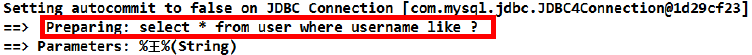
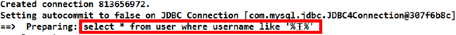
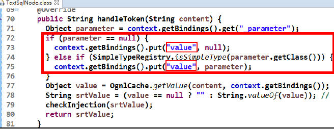
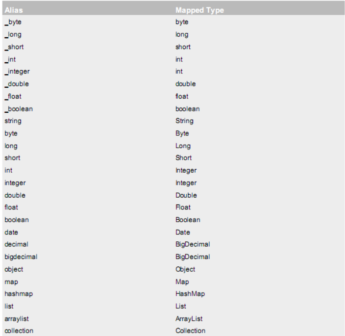
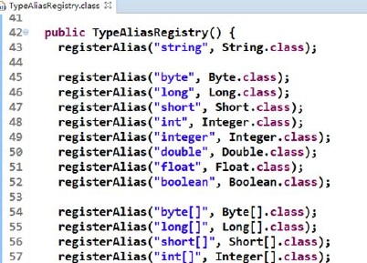
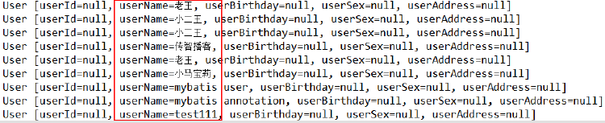
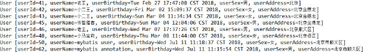
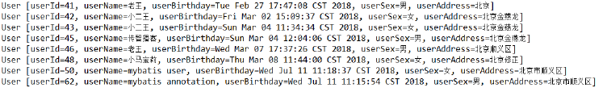

基于代理Dao的CRUD实现和源码分析，传统Dao实体类在Mybatis中的使用。以及Mybatis中输入参数的深入和输出结果的封装。
回顾自定义流程
流程

环境搭建步骤
第一步:创建 maven 工程
第二步:导入坐标
第三步:编写必要代码(实体类和持久层接口)
第四步:编写 SqlMapConfig.xml
第五步:编写映射配置文件
第六步:编写测试类
基于代理 Dao 实现 CRUD 操作
使用要求:
1、持久层接口和持久层接口的映射配置必须在相同的包下
2、持久层映射配置中 mapper 标签的 namespace 属性取值必须是持久层接口的全限定类名
3、SQL 语句的配置标签<select>,<insert>,<delete>,<update>的 id 属性必须和持久层接口的
方法名相同。
根据 ID 查询
持久层接口
/**
* 根据 id 查询
* @param userId
* @return
*/
User findById(Integer userId);
映射配置文件
<!-- 根据 id 查询 -->
<select id="findById" resultType="uestc.zhangkx.domain.User" parameterType="int">
select * from user where id = #{uid}
</select>
细节:
- resultType 属性——用于指定结果集的类型。
- parameterType 属性——用于指定传入参数的类型。
- sql 语句中使用#{}字符——它代表占位符,相当于原来 jdbc 部分所学的?,都是用于执行语句时替换实际的数据。具体的数据是由#{}里面的内容决定的。
- #{}中内容的写法——由于数据类型是基本类型,所以此处可以随意写。
测试方法
/**
*
* <p>Title: MybastisCRUDTest</p>
* <p>Description: 测试 mybatis 的 crud 操作</p>
*/
public class MybastisCRUDTest {
private InputStream in ;
private SqlSessionFactory factory;
private SqlSession session;
private IUserDao userDao;
@Before//在测试方法执行之前执行
public void init()throws Exception {
//1.读取配置文件
in = Resources.getResourceAsStream("SqlMapConfig.xml");
//2.创建构建者对象
SqlSessionFactoryBuilder builder = new SqlSessionFactoryBuilder();
//3.创建 SqlSession 工厂对象
factory = builder.build(in);
//4.创建 SqlSession 对象
session = factory.openSession();
//5.创建 Dao 的代理对象
userDao = session.getMapper(IUserDao.class);
}
@After//在测试方法执行完成之后执行
public void destroy() throws Exception{
//提交事务
session.commit();
//7.释放资源
session.close();
in.close();
}
@Test
public void testFindOne() {
//6.执行操作
User user = userDao.findById(41);
System.out.println(user);
}
保存操作
持久层接口
/**
* 保存用户
* @param user
* @return
影响数据库记录的行数
*/
int saveUser(User user);
映射配置文件
<!-- 保存用户-->
<insert id="saveUser" parameterType="uestc.zhangkx.domain.User">
insert into user(username,birthday,sex,address)
values(#{username},#{birthday},#{sex},#{address})
</insert>
细节:
- parameterType 属性——代表参数的类型,因为我们要传入的是一个类的对象,所以类型就写类的全名称。
- sql 语句中使用#{}字符——它代表占位符,相当于原来 jdbc 部分所学的?,都是用于执行语句时替换实际的数据。具体的数据是由#{}里面的内容决定的。
#{}中内容的写法:
由于我们保存方法的参数是 一个 User 对象,此处要写 User 对象中的属性名称。它用的是 ognl 表达式。
ognl 表达式:
它是 apache 提供的一种表达式语言,全称是:Object Graphic Navigation Language（ 对象图导航语言）它是按照一定的语法格式来获取数据的。
语法格式就是使用 #{对象.对象}的方式
#{user.username}它会先去找 user 对象,然后在 user 对象中找到 username 属性,并调用getUsername()方法把值取出来。但是我们在 parameterType 属性上指定了实体类名称,所以可以省略 user.而直接写 username。
测试方法
@Test
public void testSave(){
User user = new User();
user.setUsername("modify User property");
user.setAddress("北京市顺义区");
user.setSex("男");
user.setBirthday(new Date());
System.out.println("保存操作之前:"+user);
//5.执行保存方法
userDao.saveUser(user);
System.out.println("保存操作之后:"+user);
}
打开 Mysql 数据库发现并没有添加任何记录,原因是什么?
这一点和 jdbc 是一样的,我们在实现增删改时一定要去控制事务的提交,那么在 mybatis 中如何控制事务提交呢?
可以使用:session.commit();来实现事务提交。加入事务提交后的代码如下:
@After//在测试方法执行完成之后执行
public void destroy() throws Exception{
session.commit();
//7.释放资源
session.close();
in.close();
}
问题扩展:新增用户 id 的返回值
新增用户后,同时还要返回当前新增用户的 id 值,因为 id 是由数据库的自动增长来实现的,所以就相当于我们要在新增后将自动增长auto_increment的值返回。
<insert id="saveUser" parameterType="USER">
<!-- 配置保存时获取插入的 id -->
<selectKey keyColumn="id" keyProperty="id" resultType="int">
select last_insert_id();
</selectKey>
insert into user(username,birthday,sex,address)
values(#{username},#{birthday},#{sex},#{address})
</insert>
用户更新
持久层接口
/**
* 更新用户
* @param user
* @return 影响数据库记录的行数
*/
int updateUser(User user);
映射配置文件
<!-- 更新用户 -->
<update id="updateUser" parameterType="uestc.zhangkx.domain.User">
update user set username=#{username},birthday=#{birthday},sex=#{sex},
address=#{address} where id=#{id}
</update>
测试方法
@Test
public void testUpdateUser()throws Exception{
//1.根据 id 查询
User user = userDao.findById(52);
//2.更新操作
user.setAddress("北京市顺义区");
int res = userDao.updateUser(user);
System.out.println(res);
}
用户删除
持久层接口
/**
* 根据 id 删除用户
* @param userId
* @return
*/
int deleteUser(Integer userId);
映射配置文件
<!-- 删除用户 -->
<delete id="deleteUser" parameterType="java.lang.Integer">
delete from user where id = #{uid}
</delete>
测试方法
@Test
public void testDeleteUser() throws Exception {
//6.执行操作
int res = userDao.deleteUser(52);
System.out.println(res);
}
用户模糊查询
持久层接口
/**
* 根据名称模糊查询
* @param username
* @return
*/
List<User> findByName(String username);
映射配置文件
<!-- 根据名称模糊查询 -->
<select id="findByName" resultType="uestc.zhangkx.domain.User" parameterType="String">
select * from user where username like #{username}
</select>
测试方法
@Test
public void testFindByName(){
//5.执行查询一个方法
List<User> users = userDao.findByName("%王%");
for(User user : users){
System.out.println(user);
}
}
在控制台输出的执行 SQL 语句如下:

我们在配置文件中没有加入%来作为模糊查询的条件,所以在传入字符串实参时,就需要给定模糊查询的标识%。配置文件中的#{username}也只是一个占位符,所以 SQL 语句显示为“?”。
补充
模糊查询的另一种配置方式
第一步:修改 SQL 语句的配置,配置如下:
<!-- 根据名称模糊查询 -->
<select id="findByName" parameterType="string" resultType="uestc.zhangkx.domain.User">
select * from user where username like '%${value}%'
</select>
我们在上面将原来的#{}占位符,改成了${value}。注意如果用模糊查询的这种写法,那么${value}的写法就是固定的,不能写成其它名字。
第二步:测试,如下:
/**
* 测试模糊查询操作
*/
@Test
public void testFindByName(){
//5.执行查询一个方法
List<User> users = userDao.findByName("王");
for(User user : users){
System.out.println(user);
}
}
在控制台输出的执行 SQL 语句如下:

可以发现,我们在程序代码中就不需要加入模糊查询的匹配符%了,这两种方式的实现效果是一样的,但执行的语句是不一样的。
#{}与${}的区别
#{}表示一个占位符号
通过#{}可以实现 preparedStatement 向占位符中设置值,自动进行 java 类型和 jdbc 类型转换,#{}可以有效防止 sql 注入。
#{}可以接收简单类型值或 pojo 属性值。 如果 parameterType传输单个简单类型值,#{}括号中可以是 value 或其它名称。
${}表示拼接 sql 串
通过${}可以将parameterType传入的内容拼接在 sql 中且不进行 jdbc 类型转换, ${}可以接收简单类型值或 pojo 属性值,如果 parameterType 传输单个简单类型值,${}括号中只能是value。
模糊查询的${value}源码分析
我们一起来看 TextSqlNode 类的源码:

这就说明了源码中指定了读取的 key 的名字就是”value”,所以我们在绑定参数时就只能叫 value 的名字
了。
查询使用聚合函数
持久层接口
/**
* 查询总记录条数
* @return
*/
int findTotal();
映射配置文件
<!-- 查询总记录条数 -->
<select id="findTotal" resultType="int">
select count(*) from user;
</select>
测试方法
@Test
public void testFindTotal() throws Exception {
//6.执行操作
int res = userDao.findTotal();
System.out.println(res);
}
Mybatis 与 JDBC 编程的比较
1.数据库链接创建、释放频繁造成系统资源浪费从而影响系统性能,如果使用数据库链接池可解决此问题。
在SqlMapConfig.xml中配置数据链接池,使用连接池管理数据库链接。
2.Sql 语句写在代码中造成代码不易维护,实际应用 sql 变化的可能较大,sql 变动需要改变 java 代码。
将 Sql 语句配置在 XXXXmapper.xml 文件中与 java 代码分离。
3.向 sql 语句传参数麻烦,因为 sql 语句的 where 条件不一定,可能多也可能少,占位符需要和参数对应。
Mybatis 自动将 java 对象映射至 sql 语句,通过 statement 中的 parameterType 定义输入参数的类型。
4.对结果集解析麻烦,sql 变化导致解析代码变化,且解析前需要遍历,如果能将数据库记录封装成 pojo 对象解析比较方便。
Mybatis 自动将 sql 执行结果映射至 java 对象,通过 statement 中的 resultType 定义输出结果的类型。
Mybatis 的输入参数深入
parameterType 配置参数
使用说明
介绍过SQL 语句传参,使用标签的 parameterType 属性来设定。该属性的取值可以是基本类型,引用类型(例如:String 类型),还可以是实体类类型(POJO 类)。同时也可以使用实体类的包装类,现在将介绍如何使用实体类的包装类作为参数传递。
注意事项
基本类型和String：我们可以直接写类型名称,也可以使用包名.类名的方式,例如:java.lang.String。
实体类类型：只能使用全限定类名。
究其原因,是 mybaits 在加载时已经把常用的数据类型注册了别名,从而我们在使用时可以不写包名,而我们的是实体类并没有注册别名,所以必须写全限定类名。在 mybatis 的官方文档的说明(第 19 页)

这些都是支持的默认别名。我们也可以从源码角度来看它们分别都是如何定义出来的。
可以参考 TypeAliasRegistery.class 的源码：

传递 pojo 包装对象
开发中通过 pojo 传递查询条件 ,查询条件是综合的查询条件,不仅包括用户查询条件还包括其它的查询条件(比如将用户购买商品信息也作为查询条件),这时可以使用包装对象传递输入参数。Pojo 类中包含 pojo。
需求:根据用户名查询用户信息,查询条件放到 QueryVo 的 user 属性中。
编写 QueryVo
/**
*
* <p>Title: QueryVo</p>
* <p>Description: 查询条件对象</p>
*/
public class QueryVo implements Serializable {
private User user;
public User getUser() {
return user;
}
}
public void setUser(User user) {
this.user = user;
}
持久层接口
/**
*
* <p>Title: IUserDao</p>
* <p>Description: 用户的业务层接口</p>
*/
public interface IUserDao {
}
/**
* 根据 QueryVo 中的条件查询用户
* @param vo
* @return
*/
List<User> findByVo(QueryVo vo);
映射配置文件
<!-- 根据用户名称模糊查询,参数变成一个 QueryVo 对象了 -->
<select id="findByVo" resultType="uestc.zhangkx.domain.User"
parameterType="uestc.zhangkx.domain.QueryVo">
select * from user where username like #{user.username};
</select>
测试包装类
@Test
public void testFindByQueryVo() {
QueryVo vo = new QueryVo();
User user = new User();
user.setUserName("%王%");
vo.setUser(user);
List<User> users = userDao.findByVo(vo);
for(User u : users) {
System.out.println(u);
}
}
Mybatis 的输出结果封装
resultType 配置结果类型
resultType 属性可以指定结果集的类型,它支持基本类型和实体类类型。
需要注意的是,它和 parameterType 一样,如果注册过类型别名的,可以直接使用别名。没有注册过的必须使用全限定类名。例如:我们的实体类此时必须是全限定类名(今天最后一个章节会讲解如何配置实体类的别名)同时,当是实体类名称是,还有一个要求,实体类中的属性名称必须和查询语句中的列名保持一致,否则无法实现封装。
基本类型示例
Integer
/**
* 查询总记录条数
* @return
*/
int findTotal();
<!-- 查询总记录条数 -->
<select id="findTotal" resultType="int">
select count(*) from user;
</select>
User
/**
* 查询所有用户
* @return
*/
List<User> findAll();
<!-- 配置查询所有操作 -->
<select id="findAll" resultType="uestc.zhangkx.domain.User">
select * from user
</select>
特殊类型示例
修改实体类
实体类代码如下:(此时的实体类属性和数据库表的列名已经不一致了)
/**
*
* <p>Title: User</p>
* <p>Description: 用户的实体类</p>
*/
public class User implements Serializable {
private Integer userId;
private String userName;
private Date userBirthday;
private String userSex;
private String userAddress;
public Integer getUserId() {
return userId;
}
public void setUserId(Integer userId) {
this.userId = userId;
}
public String getUserName() {
return userName;
}
public void setUserName(String userName) {
this.userName = userName;
}
public Date getUserBirthday() {
return userBirthday;
}
public void setUserBirthday(Date userBirthday) {
this.userBirthday = userBirthday;
}
public String getUserSex() {
return userSex;
}
public void setUserSex(String userSex) {
this.userSex = userSex;
}
public String getUserAddress() {
return userAddress;
}
public void setUserAddress(String userAddress) {
this.userAddress = userAddress;
}
@Override
public String toString() {
return "User [userId=" + userId + ", userName=" + userName + ", userBirthday="
+ userBirthday + ", userSex="
+ userSex + ", userAddress=" + userAddress + "]";
}
}
Dao接口：
/**
* 查询所有用户
* @return
*/
List<User> findAll();
映射配置：
<!-- 配置查询所有操作 -->
<select id="findAll" resultType="uestc.zhangkx.domain.User">
select * from user
</select>
测试方法：
@Test
public void testFindAll() {
List<User> users = userDao.findAll();
for(User user : users) {
System.out.println(user);
}
}
测试结果：

为什么名称会有值呢?
因为:mysql 在 windows 系统中不区分大小写!
修改映射配置：使用别名查询
<!-- 配置查询所有操作 -->
<select id="findAll" resultType="uestc.zhangkx.domain.User">
select id as userId,username as userName,birthday as userBirthday,
sex as userSex,address as userAddress from user
</select>
运行结果:

如果我们的查询很多,都使用别名的话写起来岂不是很麻烦，我们还有更好的办法！
resultMap 结果类型
``resultMap 标签可以建立查询的列名和实体类的属性名称不一致时建立对应关系。从而实现封装。
在 select 标签中使用 resultMap 属性指定引用即可。同时 resultMap 可以实现将查询结果映射为复杂类型的 pojo,比如在查询结果映射对象中包括 pojo 和 list 实现一对一查询和一对多查询。
定义 resultMap
<!-- 建立 User 实体和数据库表的对应关系
type 属性:指定实体类的全限定类名
id 属性:给定一个唯一标识,是给查询 select 标签引用用的。
-->
<resultMap type="uestc.zhangkx.domain.User" id="userMap">
<id column="id" property="userId"/>
<result column="username" property="userName"/>
<result column="sex" property="userSex"/>
<result column="address" property="userAddress"/>
<result column="birthday" property="userBirthday"/>
</resultMap>
id 标签:用于指定主键字段
result 标签:用于指定非主键字段
column 属性:用于指定数据库列名
property 属性:用于指定实体类属性名称
映射配置
<!-- 配置查询所有操作 -->
<select id="findAll" resultMap="userMap">
select * from user
</select>
测试结果
@Test
public void testFindAll() {
List<User> users = userDao.findAll();
for(User user : users) {
System.out.println(user);
}
}
运行结果:

Mybatis 传统 DAO 层开发
使用 Mybatis 开发 Dao,通常有两个方法,即原始 Dao 开发方式和 Mapper 接口代理开发方式。而现在主流的开发方式是接口代理开发方式,这种方式总体上更加简便。但还是介绍一下Dao开发方式。
持久层 Dao 接口
/**
*
* <p>Title: IUserDao</p>
* <p>Description: 用户的业务层接口</p>
*/
public interface IUserDao {
/**
* 查询所有用户
* @return
*/
List<User> findAll();
/**
* 根据 id 查询
* @param userId
* @return
*/
User findById(Integer userId);
/**
* 保存用户
* @param user
* @return
影响数据库记录的行数
*/
int saveUser(User user);
/**
* 更新用户
* @param user
* @return 影响数据库记录的行数
*/
int updateUser(User user);
/**
* 根据 id 删除用户
* @param userId
* @return
*/
int deleteUser(Integer userId);
}
/**
* 查询总记录条数
* @return
*/
int findTotal();
持久层 Dao 实现类
/**
*
* <p>Title: UserDaoImpl</p>
* <p>Description: dao 的实现类</p>
*/
public class UserDaoImpl implements IUserDao {
private SqlSessionFactory factory;
public UserDaoImpl(SqlSessionFactory factory) {
this.factory = factory;
}
@Override
public List<User> findAll() {
SqlSession session = factory.openSession();
List<User> users = session.selectList("uestc.zhangkx.dao.IUserDao.findAll");
session.close();
return users;
}
@Override
public User findById(Integer userId) {
SqlSession session = factory.openSession();
User user = session.selectOne("uestc.zhangkx.dao.IUserDao.findById",userId);
session.close();
return user;
}
@Override
public int saveUser(User user) {
SqlSession session = factory.openSession();
int res = session.insert("uestc.zhangkx.dao.IUserDao.saveUser",user);
session.commit();
session.close();
return res;
}
@Override
public int updateUser(User user) {
SqlSession session = factory.openSession();
int res = session.update("uestc.zhangkx.dao.IUserDao.updateUser",user);
session.commit();
session.close();
return res;
}
@Override
public int deleteUser(Integer userId) {
SqlSession session = factory.openSession();
int res = session.delete("uestc.zhangkx.dao.IUserDao.deleteUser",userId);
session.commit();
session.close();
return res;
}
@Override
public int findTotal() {
SqlSession session = factory.openSession();
int res = session.selectOne("uestc.zhangkx.dao.IUserDao.findTotal");
session.close();
return res;
}
}
持久层映射配置
<?xml version="1.0" encoding="UTF-8"?>
<!DOCTYPE mapper
PUBLIC "-//mybatis.org//DTD Mapper 3.0//EN"
"http://mybatis.org/dtd/mybatis-3-mapper.dtd">
<mapper namespace="uestc.zhangkx.dao.IUserDao">
<!-- 配置查询所有操作 -->
<select id="findAll" resultType="uestc.zhangkx.domain.User">
select * from user
</select>
<!-- 根据 id 查询 -->
<select id="findById" resultType="uestc.zhangkx.domain.User" parameterType="int">
select * from user where id = #{uid}
</select>
<!-- 保存用户 -->
<insert id="saveUser" parameterType="uestc.zhangkx.domain.User">
<!-- 配置保存时获取插入的 id -->
<selectKey keyColumn="id" keyProperty="id" resultType="int">
select last_insert_id();
</selectKey>
insert into user(username,birthday,sex,address) values(#{username},#{birthday},#{sex},#{address})
</insert>
<!-- 更新用户 -->
<update id="updateUser" parameterType="uestc.zhangkx.domain.User">
update user set username=#{username},birthday=#{birthday},sex=#{sex},address=#{address} where id=#{id}
</update>
<!-- 删除用户 -->
<delete id="deleteUser" parameterType="java.lang.Integer">
delete from user where id = #{uid}
</delete>
<!-- 查询总记录条数 -->
<select id="findTotal" resultType="int">
select count(*) from user;
</select>
</mapper>
测试类
/**
*
* <p>Title: MybastisCRUDTest</p>
* <p>Description: 测试 mybatis 的 crud 操作</p>
*/
public class MybastisCRUDTest {
private InputStream in ;
private SqlSessionFactory factory;
private IUserDao userDao;
@Test
public void testFindAll() {
List<User> users = userDao.findAll();
for(User user : users) {
System.out.println(user);
}
}
@Test
public void testFindOne() {
//6.执行操作
User user = userDao.findById(56);
System.out.println(user);
}
@Test
public void testSaveUser() throws Exception {
User user = new User();
user.setUsername("mybatis dao user");
//6.执行操作
int res = userDao.saveUser(user);
System.out.println(res);
System.out.println(user.getId());
@Test
public void testUpdateUser()throws Exception{
//1.根据 id 查询
User user = userDao.findById(41);
//2.更新操作
user.setAddress("北京市顺义区");
int res = userDao.updateUser(user);
System.out.println(res);
}
@Test
public void testDeleteUser() throws Exception {
//6.执行操作
int res = userDao.deleteUser(56);
System.out.println(res);
}
@Test
public void testFindTotal() throws Exception {
//6.执行操作
int res = userDao.findTotal();
System.out.println(res);
}
@Before//在测试方法执行之前执行
public void init()throws Exception {
//1.读取配置文件
in = Resources.getResourceAsStream("SqlMapConfig.xml");
//2.创建构建者对象
SqlSessionFactoryBuilder builder = new SqlSessionFactoryBuilder();
//3.创建 SqlSession 工厂对象
factory = builder.build(in);
//4.创建 Dao 接口的实现类
userDao = new UserDaoImpl(factory);
}
@After//在测试方法执行完成之后执行
public void destroy() throws Exception{
//7.释放资源
in.close();
}
}
SqlMapConfig.xml配置文件
配置内容
SqlMapConfig.xml 中配置的内容和顺序
-properties(属性)
--property
-settings(全局配置参数)
--setting
-typeAliases(类型别名)
--typeAliase
--package
-typeHandlers(类型处理器)
-objectFactory(对象工厂)
-plugins(插件)
-environments(环境集合属性对象)
--environment(环境子属性对象)
---transactionManager(事务管理)
---dataSource(数据源)
-mappers(映射器)
--mapper
--package
properties(属性)
在使用 properties 标签配置时,我们可以采用两种方式指定属性配置。
在resource下写db.properties文件：
jdbc.driver=com.mysql.cj.jdbc.Driver
jdbc.url=jdbc:mysql://localhost:3306/mybatis
jdbc.username=root
jdbc.password=0217
这时，配置映射可以引用properties文件：
<?xml version="1.0" encoding="UTF-8"?>
<!DOCTYPE configuration
PUBLIC "-//mybatis.org//DTD Config 3.0//EN"
"http://mybatis.org/dtd/mybatis-3-config.dtd">
<configuration>
<properties resourse="db.properties">
</properties>
<environments default="mysql">
<environment id="mysql">
<transactionManager type="JDBC">
</transactionManager>
<dataSource type="POOLED">
<property name="driver" value="${jdbc.driver}"/>
<property name="url" value="${jdbc.url}"/>
<property name="username" value="${jdbc.username}"/>
<property name="password" value="${jdbc.password}"/>
</dataSource>
</environment>
</environments>
<mappers>
<mapper resource="uestc/zhangkx/dao/UserMapper.xml"></mapper>
</mappers>
</configuration>
resource属性——resource=”jdbcConfig.properties”
url 属性——url=file:///D:/IdeaProjects/day02_eesy_01mybatisCRUD/src/main/resources/jdbcConfig.prop
erties
URL: Uniform Resource Locator 统一资源定位符
http://localhost:8080/mystroe/CategoryServlet
URI:Uniform Resource Identifier 统一资源标识符
/mystroe/CategoryServlet
typeAliases(类型别名)
在 SqlMapConfig.xml 中配置:
<typeAliases>
<!-- 单个别名定义 -->
<typeAlias alias="user" type="com.itheima.domain.User"/>
<!-- 批量别名定义,扫描整个包下的类,别名为类名(首字母大写或小写都可以) -->
<package name="com.itheima.domain"/>
<package name=" 其它包"/>
</typeAliases>
mappers(映射器)
<mapper resource=” “ />
使用相对于类路径的资源
如:<mapper resource=”com/itheima/dao/IUserDao.xml” />
<mapper class=” “ />
使用 mapper 接口类路径
如:<mapper class=”com.itheima.dao.UserDao”/>
注意:此种方法要求 mapper 接口名称和 mapper 映射文件名称相同,且放在同一个目录中。
<package name=””/>
注册指定包下的所有 mapper 接口
如:<package name=”cn.itcast.mybatis.mapper”/>
注意:此种方法要求 mapper 接口名称和 mapper 映射文件名称相同,且放在同一个目录中。